概述
- IO 多路复用技术，本质上是要解决单进程如何高效的监听多个 socket 这个问题.
- IO multiplexing 就是我们说的 select，poll，epoll，有些地方也称这种 IO 方式为 event driven IO。select/epoll 的好处就在于单个 process 就可以同时处理多个网络连接的 IO。它的基本原理就是 select，poll，epoll 这个 function 会不断的轮询所负责的所有 socket，当某个 socket 有数据到达了，就通知用户进程。( process blocks in call to select, waiting for one of possibly many sockets to become readable)
多路是指？多个业务方（句柄）并发下来的 IO复用是指？复用这一个后台处理程序,也就是单线程.IO 多路复用就是 1 个线程处理 多个 fd 的模式。我们的要求是：这个 “1” 就要尽可能的快，避免一切无效工作，要把所有的时间都用在处理句柄的 IO 上，不能有任何空转或 sleep 的时间浪费。
一 服务端网络编程模型的演变过程
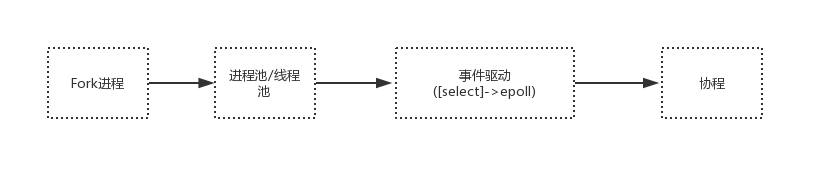
（一） 第一阶段 用户空间调用 fork,生成多 worker 进程
每次都创建一个新的进程或线程，去调用 read 函数，并做业务处理。
while(1) { connfd = accept(listenfd); // 阻塞建立连接 pthread_create（doWork); // 创建一个新的线程 } void doWork() { int n = read(connfd, buf); // 阻塞读数据 doSomeThing(buf); // 利用读到的数据做些什么 close(connfd); // 关闭连接，循环等待下一个连接 }
问题点: 为每个客户端创建一个线程，服务器端的线程资源很容易被耗光。
（二） 第二阶段 IO 多路复用之 Select
-
select 是操作系统提供的系统调用函数，通过它，我们可以把一个文件描述符的数组发给操作系统， 让操作系统去遍历，确定哪个文件描述符可以读写， 然后告诉我们去处理.
-
select 系统调用的函数定义如下。
int select( int nfds, fd_set *readfds, fd_set *writefds, fd_set *exceptfds, struct timeval *timeout); // nfds:监控的文件描述符集里最大文件描述符加1 // readfds：监控有读数据到达文件描述符集合，传入传出参数 // writefds：监控写数据到达文件描述符集合，传入传出参数 // exceptfds：监控异常发生达文件描述符集合, 传入传出参数 // timeout：定时阻塞监控时间，3种情况 // 1.NULL，永远等下去 // 2.设置timeval，等待固定时间 // 3.设置timeval里时间均为0，检查描述字后立即返回，轮询
一些细节
- select 调用需要传入 fd 数组，需要拷贝一份到内核，高并发场景下这样的拷贝消耗的资源是惊人的。（
可优化为不复制） - select 在内核层仍然是通过遍历的方式检查文件描述符的就绪状态，是个同步过程，只不过无系统调用切换上下文的开销。（
内核层可优化为异步事件通知） - select 仅仅返回可读文件描述符的个数，具体哪个可读还是要用户自己遍历。（
可优化为只返回给用户就绪的文件描述符，无需用户做无效的遍历）
整个 select 的流程
流程图如下
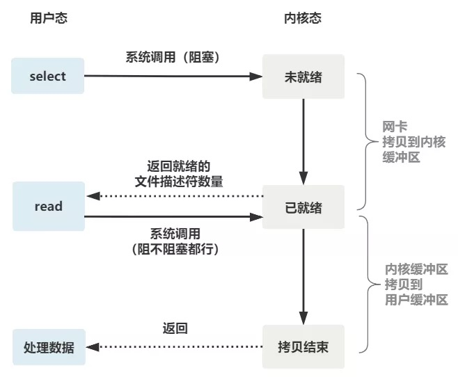
- 可以看到，这种方式，既做到了一个线程处理多个客户端连接（文件描述符），又减少了系统调用的开销（
多个文件描述符只有一次 select 的系统调用 + n 次就绪状态的文件描述符的 read 系统调用）
select 低效的原因
- Select 低效的原因之一是将“维护等待队列”和“阻塞进程”两个步骤合二为一。
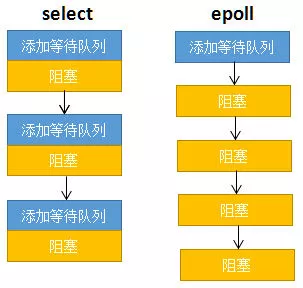
-
- 如上图所示，每次调用 Select 都需要这两步操作，然而大多数应用场景中，需要监视的 Socket 相对固定，并不需要每次都修改。
-
- Epoll 将这两个操作分开，先用 epoll_ctl 维护等待队列，再调用 epoll_wait 阻塞进程。显而易见地，效率就能得到提升。
Poll
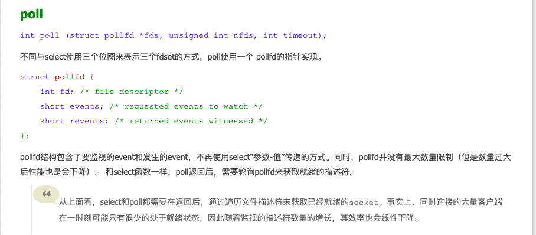
（三） 第三阶段 Epoll
epoll 是最终的大 boss，它解决了 select 和 poll 的一些问题。
还记得上面说的 select 的三个细节么？
- select 调用需要传入 fd 数组，需要拷贝一份到内核，高并发场景下这样的拷贝消耗的资源是惊人的。（可优化为不复制）
- select 在内核层仍然是通过遍历的方式检查文件描述符的就绪状态，是个同步过程，只不过无系统调用切换上下文的开销。（内核层可优化为异步事件通知）
- select 仅仅返回可读文件描述符的个数，具体哪个可读还是要用户自己遍历。（可优化为只返回给用户就绪的文件描述符，无需用户做无效的遍历）
所以 epoll 主要就是针对这三点进行了改进。
- 内核中保存一份文件描述符集合，无需用户每次都重新传入，只需告诉内核修改的部分即可。
- 内核不再通过轮询的方式找到就绪的文件描述符，而是通过异步 IO 事件唤醒。
- 内核仅会将有 IO 事件的文件描述符返回给用户，用户也无需遍历整个文件描述符集合。
具体，操作系统提供了这三个函数。
第一步，创建一个 epoll 句柄(创建 Epoll 对象)
int epoll_create(int size);
如下图所示，当某个进程调用 epoll_create 方法时，内核会创建一个 eventpoll 对象（也就是程序中 Epfd 所代表的对象）。
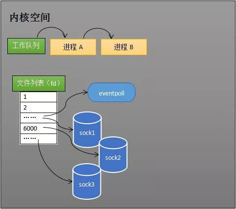
eventpoll 对象也是文件系统中的一员，和 Socket 一样，它也会有等待队列。
创建一个代表该 Epoll 的 eventpoll 对象是必须的，因为内核要维护就绪列表等数据，就绪列表可以作为 eventpoll 的成员。
第二步，向内核添加、修改或删除要监控的文件描述符。
int epoll_ctl( int epfd, int op, int fd, struct epoll_event *event);
创建 Epoll 对象后，可以用 epoll_ctl 添加或删除所要监听的 Socket。以添加 Socket 为例。
添加所要监听的 Socket
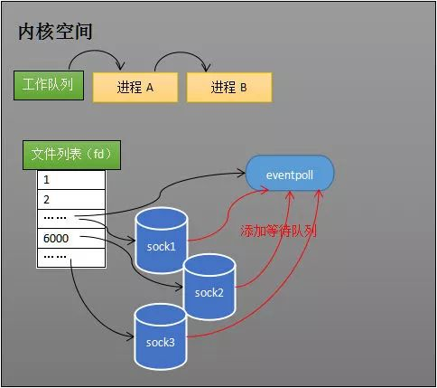
如上图，如果通过 epoll_ctl 添加 Sock1、Sock2 和 Sock3 的监视，内核会将 eventpoll对象（也就是程序中 Epfd 所代表的对象）, 添加到这三个 Socket 的等待队列中。
当 Socket 收到数据后，中断程序会操作 eventpoll 对象，而不是直接操作进程。
第三步，类似发起了 select() 调用
int epoll_wait( int epfd, struct epoll_event *events, int max events, int timeout);
当 Socket 收到数据后，中断程序会给 eventpoll对象（也就是程序中 Epfd 所代表的对象） 的就绪列表添加 Socket 引用。
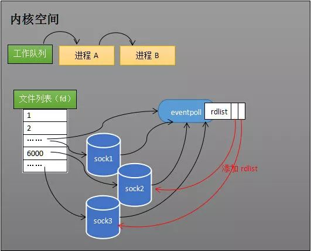
如上图展示的是 Sock2 和 Sock3 收到数据后，中断程序让 Rdlist 引用这两个 Socket。
eventpoll 对象相当于 Socket 和进程之间的中介，Socket 的数据接收并不直接影响进程，而是通过改变 eventpoll对象 的就绪列表来改变进程状态。
当程序执行到 epoll_wait 时，如果 Rdlist 已经引用了 Socket，那么 epoll_wait 直接返回(并告知就绪的 Socket 对象是哪些,也就是对应的 FD,比如 FD 3 号和 4 号是 Ready 了,进程可以直接 Read 数据了)，如果 Rdlist 为空，阻塞进程。
阻塞和唤醒进程
假设计算机中正在运行进程 A 和进程 B，在某时刻进程 A 运行到了 epoll_wait 语句, epoll_wait会阻塞进程.
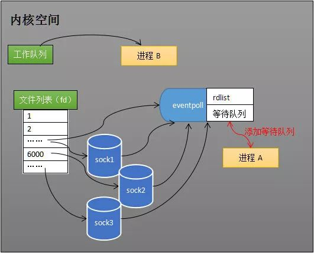
如上图所示，内核会将进程 A 放入 eventpoll对象的等待队列中，阻塞进程。
当 Socket 接收到数据，中断程序(主要是软中断处理程序)一方面修改 Rdlist，另一方面唤醒 eventpoll 等待队列中的进程，进程 A 再次进入运行状态（如下图）。
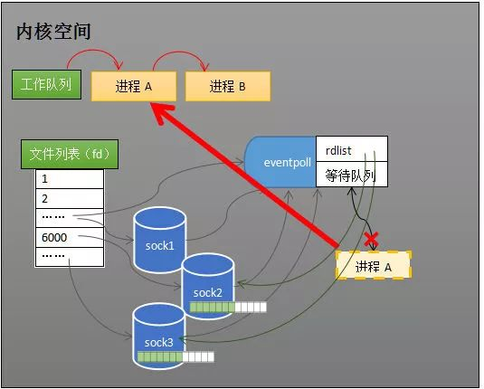
也因为 Rdlist 的存在，进程 A 可以知道哪些 Socket 发生了变化。
整体流程图
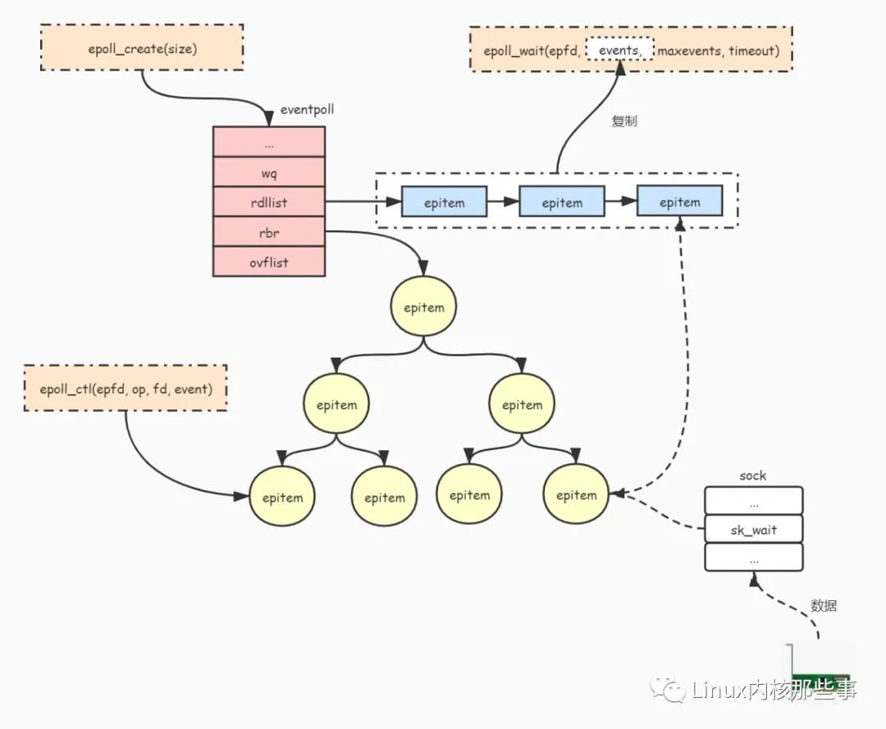
异步 IO 事件通知机制
怎么才能保证数据准备好之后，立马感知呢？
- 要求对应的 file 结构体，必须要有 poll 方法.
- 假设某个 socket 有可读写的数据了, 软中断处理程序这边，会唤醒该socket 的
等待队列里面的对象, 这个对象可以是进程，也可以是eventpoll对象 - 在
epoll_ctl的内部实现中，一个核心步骤就是设置 poll 回调, 给eventpoll对象设置好 poll 回调. - 当然 epoll 池可以管理的对象并不只是 socket fd，其他类型的 fd 也可以.
思考来了：poll 回调是什么？怎么设置？
先说说 file_operations->poll 是什么？
在 文件描述符 fd 究竟是什么 说过，Linux 设计成一切皆是文件的架构，这个不是说说而已，而是随处可见。实现一个文件系统的时候，就要实现这个文件调用，这个结构体用struct file_operations来表示。这个结构体有非常多的函数，精简了一些，如下：
struct file_operations {
ssize_t (*read) (struct file *, char __user *, size_t, loff_t *);
ssize_t (*write) (struct file *, const char __user *, size_t, loff_t *);
__poll_t (*poll) (struct file *, struct poll_table_struct *);
int (*open) (struct inode *, struct file *);
int (*fsync) (struct file *, loff_t, loff_t, int datasync);
// ....
};
你看到了 read，write，open，fsync，poll 等等，这些都是对文件的定制处理操作，对于文件的操作其实都是在这个框架内实现逻辑而已，比如 ext2 如果有对 read/write 做定制化，那么就会是 ext2_read，ext2_write，ext4 就会是 ext4_read，ext4_write。在 open 具体文件的时候会赋值对应文件系统的 file_operations 给到 file 结构体。
那我们很容易知道 read 是文件系统定制 fd 读的行为调用，write 是文件系统定制 fd 写的行为调用，file_operations->poll 呢？
这个是定制监听事件的机制实现。通过 poll 机制让上层能直接告诉底层，我这个 fd 一旦读写就绪了，请底层硬件（比如网卡）回调的时候自动把这个 fd 相关的结构体放到指定队列中，并且唤醒操作系统. file_operations的poll是驱动提供给应用程序探测设备文件是否有数据可读接口.
举个例子：网卡收发包其实走的异步流程，操作系统把数据丢到一个指定地点，网卡不断的从这个指定地点掏数据处理。请求响应通过中断回调来处理，中断一般拆分成两部分：硬中断和软中断。poll 函数就是把这个软中断回来的路上再加点料，只要读写事件触发的时候，就会立马通知到上层，采用这种事件通知的形式就能把浪费的时间窗就完全消失了。
划重点：这个 poll 事件回调机制则是 epoll 池高效最核心原理。
划重点：epoll 池管理的句柄只能是支持了 file_operations->poll 的文件 fd。换句话说，如果一个“文件”所在的文件系统没有实现 poll 接口，那么就用不了 epoll 机制。
二 总结
- IO 多路复用的原始实现很简单，就是一个 1 对多的服务模式，一个 loop 对应处理多个 fd ；
- IO 多路复用想要做到真正的高效，必须要内核机制提供。因为 IO 的处理和完成是在内核，如果内核不帮忙，用户态的程序根本无法精确的抓到处理时机；
- fd 记得要设置成非阻塞的哦，切记；
- epoll 池通过高效的内部管理结构，并且结合操作系统提供的 poll 事件注册机制，实现了高效的 fd 事件管理，为高并发的 IO 处理提供了前提条件；
- epoll 全名 eventpoll，在 Linux 内核下以一个文件系统模块的形式实现，所以有人常说 epoll 其实本身就是文件系统也是对的； 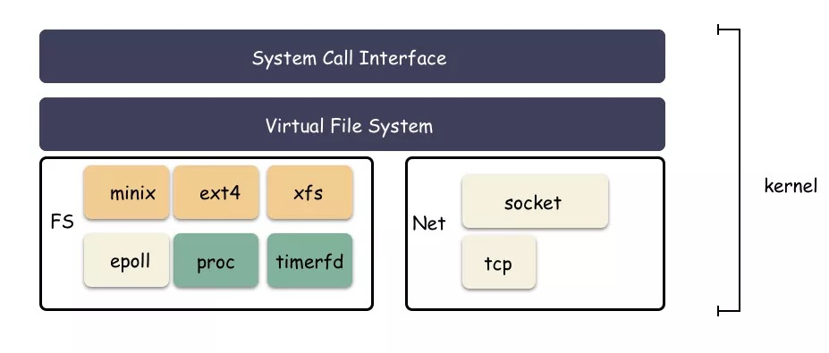
- socketfd，eventfd，timerfd 这三种”文件“fd 实现了 poll 接口，所以网络 fd，事件 fd，定时器 fd 都可以使用 epoll_ctl 注册到池子里。我们最常见的就是网络 fd 的多路复用； ext2，ext4，xfs 这种真正意义的文件系统反倒没有提供 poll 接口实现，所以不能用 epoll 池来管理其句柄。那文件就无法使用 epoll 机制了吗？不是的，有一个库叫做 libaio ，通过这个库我们可以间接的让文件使用 epoll 通知事件，
三 epoll 机制核心数据结构
1 struct eventpoll
/*
* This structure is stored inside the "private_data" member of the file
* structure and represents the main data structure for the eventpoll
* interface.
*/
struct eventpoll {
/* Protect the access to this structure */
spinlock_t lock;
/*
* This mutex is used to ensure that files are not removed
* while epoll is using them. This is held during the event
* collection loop, the file cleanup path, the epoll file exit
* code and the ctl operations.
*/
struct mutex mtx;
/* Wait queue used by sys_epoll_wait() */
wait_queue_head_t wq;
/* Wait queue used by file->poll() */
wait_queue_head_t poll_wait;
/* List of ready file descriptors */
struct list_head rdllist;
/* RB tree root used to store monitored fd structs */
struct rb_root rbr;
/*
* This is a single linked list that chains all the "struct epitem" that
* happened while transferring ready events to userspace w/out
* holding ->lock.
*/
struct epitem *ovflist;
/* wakeup_source used when ep_scan_ready_list is running */
struct wakeup_source *ws;
/* The user that created the eventpoll descriptor */
struct user_struct *user;
struct file *file;
/* used to optimize loop detection check */
int visited;
struct list_head visited_list_link;
};
- 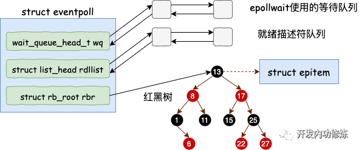
2 struct epitem
/*
* Each file descriptor added to the eventpoll interface will
* have an entry of this type linked to the "rbr" RB tree.
* Avoid increasing the size of this struct, there can be many thousands
* of these on a server and we do not want this to take another cache line.
*/
struct epitem {
union {
/* RB tree node links this structure to the eventpoll RB tree */
struct rb_node rbn;
/* Used to free the struct epitem */
struct rcu_head rcu;
};
/* List header used to link this structure to the eventpoll ready list */
struct list_head rdllink;
/*
* Works together "struct eventpoll"->ovflist in keeping the
* single linked chain of items.
*/
struct epitem *next;
/* The file descriptor information this item refers to */
struct epoll_filefd ffd;
/* Number of active wait queue attached to poll operations */
int nwait;
/* List containing poll wait queues */
struct list_head pwqlist;
/* The "container" of this item */
struct eventpoll *ep;
/* List header used to link this item to the "struct file" items list */
struct list_head fllink;
/* wakeup_source used when EPOLLWAKEUP is set */
struct wakeup_source __rcu *ws;
/* The structure that describe the interested events and the source fd */
struct epoll_event event;
};

3 struct epoll_event 代表文件描述符的各种诸如可读可写事件
- 首先了解一下epoll_ctl函数:
int epoll_ctl(int epfd, int op, int fd, struct epoll_event *event); -
- 该函数是 epoll 的事件注册函数，它不同与 select()是在监听事件时告诉内核要监听什么类型的事件，而是在这里先注册要监听的事件类型。
-
-
- 第一个参数是 epoll_create()的返回值
-
-
-
- 第二个参数表示动作，用三个宏来表示：
-
-
-
-
- EPOLL_CTL_ADD：注册新的 fd 到 epfd 中；
-
-
-
-
-
- EPOLL_CTL_MOD：修改已经注册的 fd 的监听事件；
-
-
-
-
-
- EPOLL_CTL_DEL：从 epfd 中删除一个 fd；
-
-
-
-
- 第三个参数是需要监听的 fd，第四个参数是告诉内核需要监听什么事，struct epoll_event 结构如下：
-
typedef union epoll_data {
void *ptr;
int fd;
__uint32_t u32;
__uint64_t u64;
} epoll_data_t;
struct epoll_event {
__uint32_t events; /* Epoll events */
epoll_data_t data; /* User data variable */
};
events 可以是以下几个宏的集合：
- EPOLLIN ：表示对应的文件描述符可以读（包括对端 SOCKET 正常关闭）；
- EPOLLOUT：表示对应的文件描述符可以写；
- EPOLLPRI：表示对应的文件描述符有紧急的数据可读（这里应该表示有带外数据到来）；
- EPOLLERR：表示对应的文件描述符发生错误；
- EPOLLHUP：表示对应的文件描述符被挂断；
- EPOLLET： 将 EPOLL 设为边缘触发(Edge Triggered)模式，这是相对于水平触发(Level Triggered)来说的。
- EPOLLONESHOT：只监听一次事件，当监听完这次事件之后，如果还需要继续监听这个 socket 的话，需要再次把这个 socket 加入到 EPOLL 队列里
4 struct epoll_filefd
struct epoll_filefd {
struct file *file;
int fd;
} __packed;
5 struct ep_pqueue
/* Wrapper struct used by poll queueing */
struct ep_pqueue {
poll_table pt;
struct epitem *epi;
};
6 struct poll_table
struct poll_table_struct;
/*
* structures and helpers for f_op->poll implementations
*/
typedef void (*poll_queue_proc)(struct file *, wait_queue_head_t *, struct poll_table_struct *);
/*
* Do not touch the structure directly, use the access functions
* poll_does_not_wait() and poll_requested_events() instead.
*/
typedef struct poll_table_struct {
poll_queue_proc _qproc;
unsigned long _key;
} poll_table;